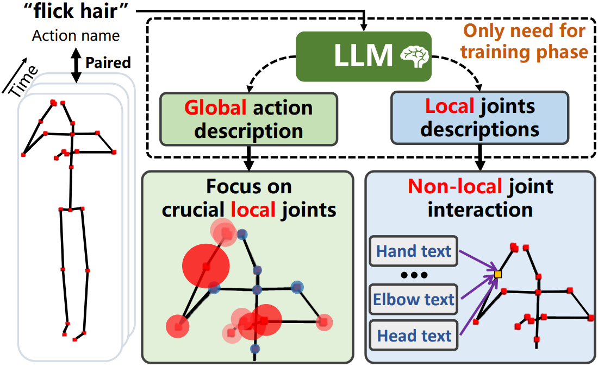

|
Wenzheng Zeng 「曾文正」 |
|
|
I am a first year PhD candidate at the National University of Singapore (NUS), affiliated with the Department of Computer Science and Show Lab, closely co-supervised by Prof. Hwee Tou Ng and Prof. Mike Zheng Shou. I received my B.Eng and M.Phil degree from School of Artificial Intelligence and Automation, Huazhong University of Science and Technology (HUST), working with Prof. Yang Xiao and Prof. Zhiguo Cao, and also collaborating with Dr. Joey Tianyi Zhou and Prof. Junsong Yuan. I work on computer vision research, with a primary focus on multimodal and spatiotemporal intelligence. |

|
Selected Publications(*: equal contribution, †: project lead, ‡: corresponding author) |
-

-

- 
-

-

-

![[Poster]](https://iccv.thecvf.com/media/PosterPDFs/ICCV%202025/1301.png?t=1759990615.5445755){kind=link}
Invited Talk
-
 Invited poster and spotlight talk at CVPR GAZE2023 workshop.Topic: Multi-person eyeblink detection in the wild in untrimmed videos.
Invited poster and spotlight talk at CVPR GAZE2023 workshop.Topic: Multi-person eyeblink detection in the wild in untrimmed videos.
Competitions
(Team leader or core contributor)
-
 The "Challenge Cup" National Competition, 2023Topic: Driver Monitoring System (DMS).Result: Winning the Grand Prize (top prize beyond First Prize), serving as team leader.
The "Challenge Cup" National Competition, 2023Topic: Driver Monitoring System (DMS).Result: Winning the Grand Prize (top prize beyond First Prize), serving as team leader. -
 The Visual Inductive Priors for Data-Efficient Computer Vision Challenge, ECCV 2022Topic: Action recognition with limited training data.Result: Obtain 3rd place and Jury Prize in the action recognition track (equal core contribution).
The Visual Inductive Priors for Data-Efficient Computer Vision Challenge, ECCV 2022Topic: Action recognition with limited training data.Result: Obtain 3rd place and Jury Prize in the action recognition track (equal core contribution). -
 China Graduate AI Innovation Competition, 2021Topic: Cloud + AI assist Parkinson's Diagnosis.Result: Obtain 3rd place and fisrt prize (3/1505).
China Graduate AI Innovation Competition, 2021Topic: Cloud + AI assist Parkinson's Diagnosis.Result: Obtain 3rd place and fisrt prize (3/1505). -
 Fisheye Video-based Action Recognition Competition at the MMVRAC Workshop, ICCV 2021Topic: Action recognition in fisheye videos.Result: Obtain 4th place.
Fisheye Video-based Action Recognition Competition at the MMVRAC Workshop, ICCV 2021Topic: Action recognition in fisheye videos.Result: Obtain 4th place. -
 The Mathematical Contest In Modeling (MCM), America, 2020Topic: Comprehensive exploration of buyer reviews and ratings for Amazon e-commerce products.Result: Obtain Meritorious Winner (9%) (equal core contribution).
The Mathematical Contest In Modeling (MCM), America, 2020Topic: Comprehensive exploration of buyer reviews and ratings for Amazon e-commerce products.Result: Obtain Meritorious Winner (9%) (equal core contribution).
Selected Awards
|